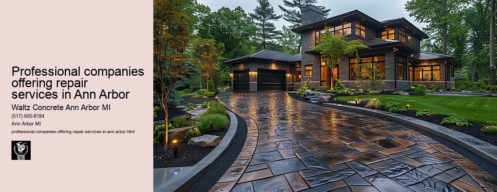

News
Concrete Driveway Installation Ann Arbor Mi
Concrete Driveway Installation Ann Arbor Mi
Choosing the right contractor for installation
Cost of concrete driveway installation in Ann Arbor
Permit requirements for driveway installation in Ann Arbor
The process and timeline of concrete driveway installation
Different types of concrete used in driveways
Maintenance and Repair of Concrete Driveways in Ann Arbor Mi
Maintenance and Repair of Concrete Driveways in Ann Arbor Mi
Preventive maintenance tips for durability
Common causes for concrete driveway damage
Professional companies offering repair services in Ann Arbor
Doityourself versus professional repairs
Costs associated with repairing a concrete driveway
Designs and Styles of Concrete Driveways in Ann Arbor Mi
Designs and Styles of Concrete Driveways in Ann Arbor Mi
Popular design trends for driveways
Considering climate factors when choosing a design or style
Unique customizations available for concrete driveways
Influence of home architecture on driveway design
Stamped stained and decorative options
Environmental Impact of Concrete Driveways in Ann Arbor Mi
Environmental Impact of Concrete Driveways in Ann Arbor Mi
Carbon footprint associated with concrete production
Use of sustainable materials in concrete driveways
Drainage considerations to reduce environmental impact
Local regulations regarding environmentally friendly driveways
Potential use of permeable or porous pavement
Alternatives to Concrete Driveways in Ann Arbor Mi
Alternatives to Concrete Driveways in Ann Arbor Mi
Asphalt driveways and their proscons
Paver stone driveways and their benefitsdrawbacks
Gravel or crushed stone as an alternative option
Comparing costs between different driveway materials
Resinbound surfaces as emerging technology
About Us
Contact Us

Professional companies offering repair services in Ann Arbor
Professional companies offering repair services in Ann Arbor
Title: Professional Companies Offering Repair Services in Ann Arbor
Ann Arbor, a vibrant city located in the southeastern region of Michigan, is home to an array of professional companies that offer top-notch repair services. These businesses cater to various industries and needs from auto repair and appliance restoration to technology support and home renovation. They are essential players in maintaining the quality of life for residents, contributing significantly to the local economy.
One of the most sought-after services in Ann Arbor is automotive repair. Given the importance of reliable transportation for work, school, or leisure activities, it's no surprise that there are numerous auto shops throughout the city. These establishments provide a wide range of services - from routine maintenance checks and tire replacements to more intricate engine overhauls or bodywork after accidents. With highly trained staff who use advanced diagnostic tools and equipment, these companies ensure that vehicles remain safe and efficient on the road.
Next on this list is appliance repair service providers. As we rely heavily on various appliances for daily tasks such as cooking, cleaning or even entertainment purposes; their efficient functioning becomes crucial. Whether it's a faulty refrigerator leaking water or a washing machine refusing to spin, these professionals can fix them with utmost precision. By using modern techniques and genuine spare parts they ensure longevity of your valuable appliances.
The proliferation of digital devices has also given rise to many tech repair companies within Ann Arbors borders. From cracked smartphone screens and malfunctioning laptops to complex network issues in commercial setups; these experts have solutions for all your technological woes. Their fast, reliable service ensures minimal downtime so you can get back online as quickly as possible.
Homeowners will also appreciate the abundance of general contractors offering home renovation and repair services across Ann Arbor. Be it a leaky roof needing urgent attention or remodeling projects intended to boost property value; these skilled craftsmen deliver results that combine functionality with aesthetic appeal.
Maintaining professionalism across all interactions while delivering quality workmanship is a common ethos among these repair service providers. They understand that their reputation is built not just on the work they do, but also on how they treat their customers. Hence, you can expect timely service, honest pricing and clear communication from these companies.
In conclusion, Ann Arbor boasts a wide array of professional repair services to meet every need. The commitment to quality and customer satisfaction that these businesses exhibit ensures residents can trust them with their various repair needs. Whether its your car, computer, home or appliances; rest assured there are professionals in Ann Arbor who can restore them to perfect working order.
Common causes for concrete driveway damage
Professional companies offering repair services in Ann Arbor
Frequently Asked Questions
Which companies in Ann Arbor offer professional concrete driveway repair services?
Companies such as Michigan Concrete Solutions LLC, Potoroka Concrete, and A-1 Concrete Leveling & Foundation Repair offer concrete driveway repair services in Ann Arbor.
What are the costs of getting a concrete driveway repaired by these companies in Ann Arbor?
The cost varies depending on the extent of the damage and the specific company chosen. Its best to contact each company directly for a quote.
How long does it usually take for these companies to complete a concrete driveway repair job in Ann Arbor?
The time frame can vary based on the complexity of the project, but generally most repairs can be completed within one week. For accurate timelines, reach out directly to your selected service provider.
What kind of warranties or guarantees do these companies provide for their concrete driveway repair services?
Most reputable companies will provide warranties or guarantees for their work. This could range from 1 year to lifetime warranties depending on the company and type of service rendered. Always confirm warranty details before proceeding with any work.
Professional companies offering repair services in Ann Arbor